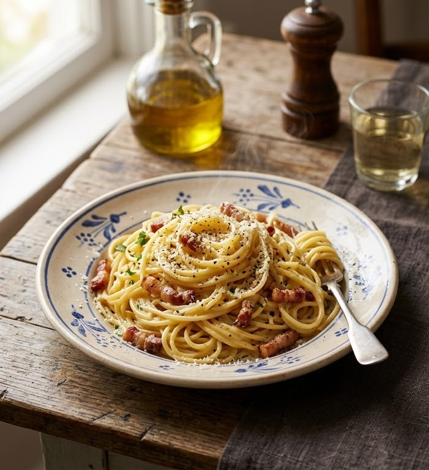

The combination of whole eggs, extra yolks, and sharp cheese creates a luxurious, glossy coating. It delivers a deeply comforting, savory custard-like texture that feels indulgent without being heavy.
Traditional recipes feature cured pork jowl (guanciale), rendered down until it is golden and shattered-crisp. The melted fat forms the savory base of the dish, while the crispy meat provides an intense burst of salt and pork flavor.